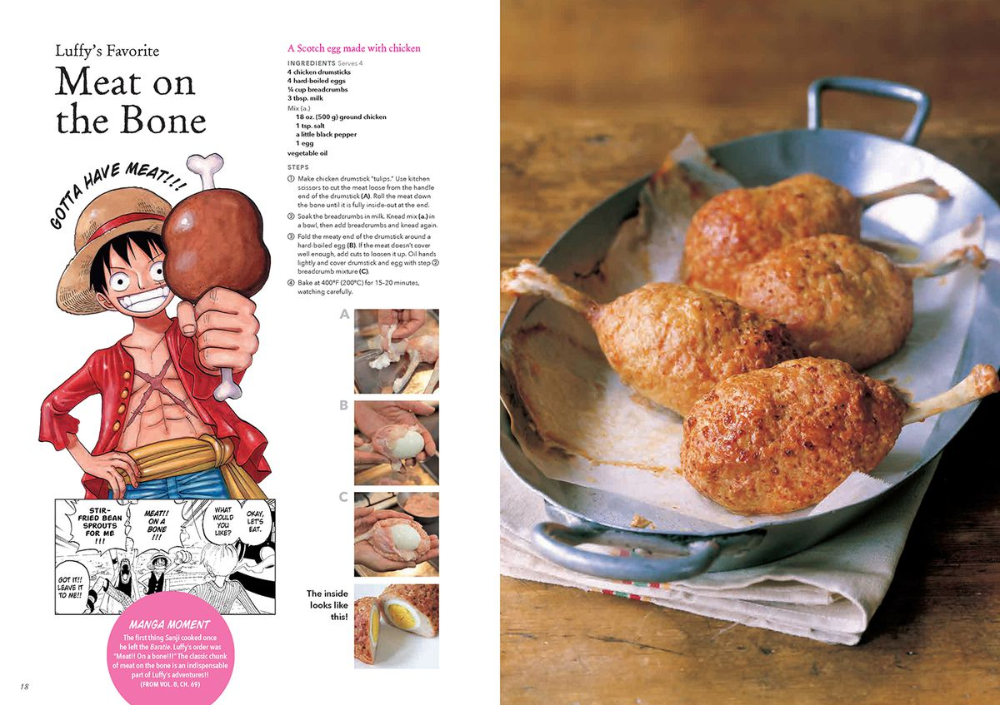

Luffy's Meat on the Bone
Recipes

Description
One Piece fans have witnessed the story’s main character Luffy get knocked out by powerful foes multiple times throughout the years.
While he’s relied on his talented friends to get him back into the fight several times,
nothing has gotten the future King of the Pirates back into the fighting form more often than a giant hunk of meat.
One of our favorite recipes is an iconic hunk of meat, and Luffy’s favorite meal.
In case you ever need to revive a fallen friend in combat or you just need a big meaty meal to make on Thanksgiving,
here’s the recipe for Luffy’s Favorite: Meat on the Bone.
This recipe makes 4 Meat on the Bones
Ingredients
Star of the Show
- 4 chicken drumsticks
- 4 hard boiled eggs
- 1/4 cup breadcrumbs
- 3 tbsp. milk
Mix
- 18 oz. (500g) ground chicken
- 1 tsp. salt
- a touch of black pepper
- 1 egg
- vegetable oil
Steps
- Make chicken drumstick “tulips.” Use kitchen scissors to cut the meat loose from the handle end of the drumstick (A).
Roll the meat down the bone until it is fully inside-out at the end.
- Soak the breadcrumbs in milk. Knead mix (a.) in a bowl, then add breadcrumbs and knead again.
- Fold the meaty end of the drumstick around a hard-boiled egg (B).
If the meat doesn’t cover well enough, add cuts to loosen it up.
Oil hands lightly and cover drumstick and egg with step 2 breadcrumb mixture (C).
- Bake at 400°F (200°C) for 15–20 minutes, watching carefully.